Sauveteur Secouriste du Travail · Espace formateur
🎬 Animation — le déroulé des quatre demi-journées
Un seul fil, dans l’ordre des blocs du parcours : pour chaque bloc, les objectifs, le réflexe, les schémas à projeter, l’essentiel, les fiches secourir au bon moment, les pièges, une question flash et les renvois vers le reste du site.
Comment l’utiliser. Choisissez la demi-journée, puis avancez bloc par bloc avec les boutons (un bloc à la fois à l’écran). « Tout afficher » donne la page complète à parcourir seul ou à imprimer. Chaque bloc porte ses repères : lien vers le module apprenant, la fiche de séquence, le déroulé formateur, les fiches outils, le glossaire, et un QR code que les stagiaires scannent pour suivre le même bloc sur leur téléphone.
Cochez ce que vous voulez projeter, dans l’ordre du déroulé : demi-journée, bloc ou diapositive isolée. Votre choix est gardé sur cet appareil. Dans le diaporama : flèches ou espace pour avancer, Échap pour fermer, F pour le plein écran.
⚖️ C1 · Situer son rôle de SST dans l'organisation des secours
Épreuve certificative 2🆕 Nouveau
🎯 Objectifs
1.1 Identifier le cadre juridique du rôle du SST
1.2 Délimiter son champ d'intervention en matière de secours
⚡
Le réflexeJe ne suis pas médecin : j’agis dans mon cadre, je protège, j’alerte, je secours.
📌 À retenir
Le citoyen doit porter assistance à une personne en péril, sans risque pour lui ni pour les tiers, par son action ou en provoquant un secours (art. 223-6 du Code pénal).
L’employeur doit organiser les soins d’urgence et la formation des secouristes (Code du travail R4224-14 à R4224-16) et protéger la santé des travailleurs (L4121-1).
Le SST intervient dans un cadre réglementé : obligations du citoyen et lien de subordination à l’employeur. L’objectif n’est pas de réciter des articles mais de comprendre ce cadre et d’être rassuré sur les conséquences de ses actes.
Champ d’intervention limité dans le temps (jusqu’à la prise en charge par les secours), dans les moyens (ceux du Guide des données techniques et des protocoles de l’entreprise) et dans l’espace (principalement l’entreprise, mais le devoir d’assistance vaut partout).
👀 Schémas à projeter
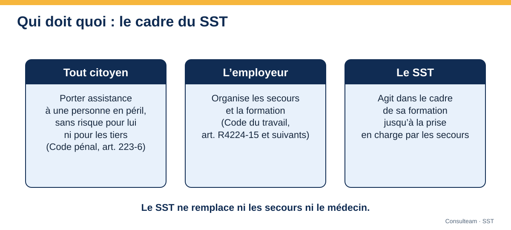
Qui doit quoi : le cadre du SST
💡Comment lire : Deux sources d’obligation, celle du citoyen et celle de l’employeur : le SST agit à leur croisement.
⚠️
Pièges fréquents
Croire qu’il faut être sûr du diagnostic avant d’agir.
Attendre l’accord de l’employeur pour intervenir.
Renoncer par peur de mal faire : le SST a une obligation de moyens, pas de résultat.
🎬 En situation : Un collègue s’effondre dans le couloir. Vous êtes formé SST. Qui doit agir, avec quels moyens, et jusqu’à quand ?
🧠
Question flashUn SST peut-il remplacer un professionnel de santé ?
Non. Il agit dans le cadre de sa formation, de son entreprise et jusqu’à l’arrivée des secours.
🧑🏫 Note formateur
Activité : Partir d’une intervention vécue par un apprenant, puis demander : jusqu’où est-on allé, avec quels moyens, qui a pris le relais ?
Évaluation formative : Questions orales courtes sur les limites de l’intervention (temps, moyens, espace), pour tous les apprenants.
🧭 C6 · Situer son rôle dans l'organisation de la prévention
Épreuve certificative 2🆕 Nouveau
🎯 Objectifs
6.1 S'approprier les enjeux de la prévention
6.2 Se positionner comme un des acteurs de la prévention
⚡
Le réflexeJe suis un acteur de la prévention : avant, pendant et après l’accident.
📌 À retenir
Prévention : ensemble des dispositions pour préserver la santé et la sécurité et améliorer les conditions de travail. Un risque se décrit par la probabilité d’un dommage et sa gravité.
Accident du travail (L411-1), accident de trajet (L411-2), maladie professionnelle (L461-1) : enjeux humains, économiques et juridiques.
Le SST est un acteur de la prévention : avant, pendant et après l’accident. Il s’articule avec les acteurs internes (CSE, service de prévention et de santé au travail, infirmier…) et externes (Carsat, IPRP…), dans les limites de ses compétences et de son autonomie.
👀 Schémas à projeter
Du danger au dommage
💡Comment lire : Chaque maillon est une occasion d’agir. Plus on agit tôt dans la chaîne, plus on évite le dommage.
⚠️
Pièges fréquents
Penser que la prévention concerne seulement l’employeur.
Confondre accident du travail, de trajet et maladie professionnelle.
🎬 En situation : Un salarié glisse sur un sol mouillé et se fracture le poignet. Où se situe le danger, l’exposition, l’événement et le dommage ?
🧠
Question flashQue décrit un risque ?
La probabilité d’un dommage et sa gravité.
🧑🏫 Note formateur
Activité : Comparer les statistiques d’accidents du travail nationales ou régionales avec celles de l’entreprise, puis faire placer par les apprenants les acteurs de prévention de leur structure sur un organigramme.
Évaluation formative : Chaque apprenant indique comment il peut contribuer concrètement à la prévention dans son entreprise et avec quels acteurs (indicateur de la grille de certification).
7.1 Repérer des dangers et informer les personnes exposées
7.2 Déterminer des risques et leurs dommages potentiels
⚡
Le réflexeJe décris la situation avec les cinq axes avant de conclure.
📌 À retenir
Observer une situation de travail avec une approche globale : méthode ITAMaMi (Individu, Tâche, Activité, Matériel, Milieu), qui sert à décrire la situation sans rien oublier.
Danger : ce qui peut faire mal. Situation dangereuse : une ou plusieurs personnes exposées à un ou plusieurs dangers.
Du danger au dommage : situation dangereuse, événement déclencheur, dommage potentiel. La notion de danger grave et imminent renvoie au droit de retrait (L4131-1).
👀 Schémas à projeter
ITAMaMi : observer une situation de travail
💡Comment lire : Cinq axes pour décrire une situation de travail sans rien oublier. Chacun peut contenir un danger.
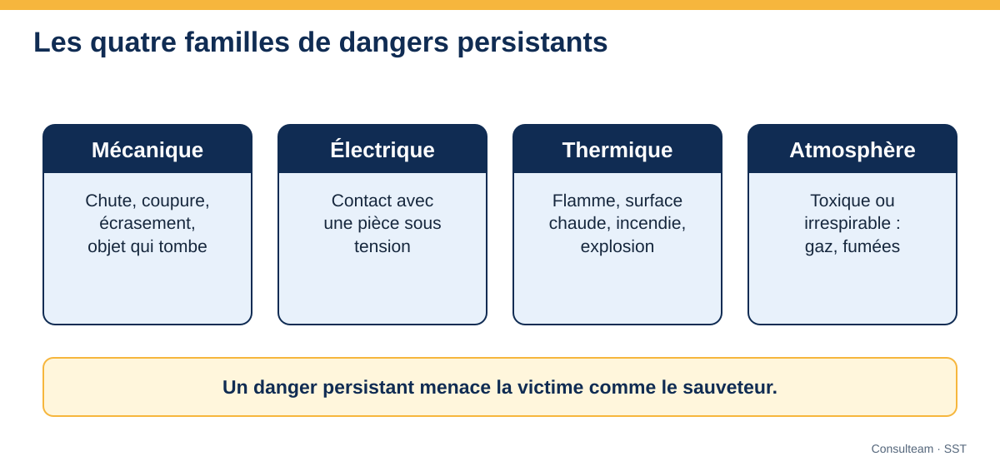
Les quatre familles de dangers persistants
💡Comment lire : Quatre familles de dangers persistants à reconnaître avant de s’approcher de la victime.
⚠️
Pièges fréquents
Chercher un seul coupable (l’opérateur) au lieu de regarder les cinq axes.
Mélanger le travail prescrit et le travail réel.
🎬 En situation : Décrivez la situation de travail d’un cariste qui a glissé : individu, tâche, activité, matériel, milieu.
🧠
Question flashQue signifie ITAMaMi ?
Individu, Tâche, Activité, Matériel, Milieu.
🧑🏫 Note formateur
Activité : À partir de photos ou de situations de l’entreprise : identifier le danger, repérer les personnes exposées, expliquer la situation dangereuse, puis construire l’enchaînement jusqu’au dommage.
Évaluation formative : À partir d’une situation dangereuse, l’apprenant détermine des risques et d’autres dommages potentiels. Le formateur réutilisera plus tard la situation de l’accident simulé (démarche « à rebours »).
🛠️ C8 · Participer à la maîtrise des risques par la prévention
Épreuve certificative 2🆕 Nouveau
🎯 Objectifs
8.1 Supprimer ou réduire les risques sur lesquels agir directement
8.2 Transmettre aux personnes en charge de la prévention
8.3 Proposer des pistes d'amélioration
⚡
Le réflexeJe supprime le danger si je peux, sinon je réduis, et je remonte l’information.
📌 À retenir
Supprimer le danger pour supprimer le risque ; sinon réduire le risque. Protection collective avant protection individuelle.
Les 9 principes généraux de prévention (Code du travail L4121-2) donnent l’ordre d’efficacité des actions.
Le SST agit directement sur ce qui est dans ses limites, transmet aux personnes en charge de la prévention (éléments de la situation dangereuse, compte rendu des actions) et propose des pistes d’amélioration.
👀 Schémas à projeter
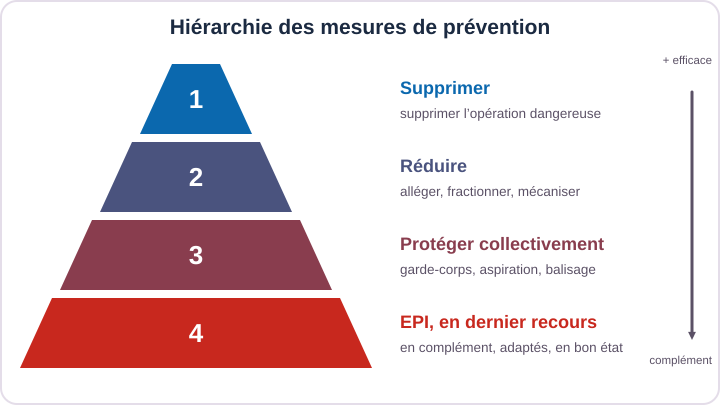
Hiérarchie des mesures de prévention
💡Comment lire : Du plus efficace au moins efficace : supprimer, réduire, protéger collectivement, protéger individuellement.
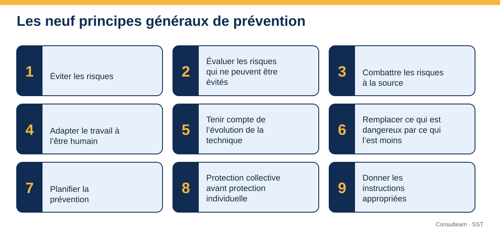
Les neuf principes généraux de prévention
💡Comment lire : Le SST en retient deux repères : supprimer à la source, et la protection collective avant l’individuelle.
⚠️
Pièges fréquents
Proposer un équipement de protection individuelle alors qu’une protection collective existe.
Garder l’information pour soi.
🎬 En situation : Le sol de l’allée est régulièrement mouillé. Quelle action proposez-vous en premier, et à qui transmettez-vous l’information ?
🧠
Question flashQue choisir en premier ?
Supprimer le danger ; sinon réduire le risque, protection collective avant individuelle.
🧑🏫 Note formateur
Activité : Sur la situation analysée en C7, chaque apprenant propose une action de prévention, la classe selon les principes généraux et indique à qui il fait remonter l’information et par quel canal (fiche, registre, oral…).
Évaluation formative : Le formateur vérifie que la proposition respecte la hiérarchie de la prévention et que la transmission est identifiée. À chaque accident simulé, la même question sera reposée.
2.1 Mettre en œuvre les mesures de protection décrites dans le processus d'alerte aux populations
2.2 Identifier les dangers persistants et les personnes exposées
2.3 Supprimer ou isoler le danger, ou soustraire la victime sans s'exposer
⚡
Le réflexeDanger persistant ? Je le supprime ou l’isole. Sinon seulement, je soustrais la victime, sans m’exposer.
📌 À retenir
Protéger est toujours la première action du SST : d’abord analyser la situation, puis agir.
Identifier les dangers persistants, selon quatre familles : danger mécanique, électrique, thermique (incendie, explosion), atmosphère toxique ou irrespirable ; repérer aussi les personnes qui pourraient y être exposées.
Supprimer le danger, l’isoler, ou soustraire la victime sans s’exposer soi-même. Le dégagement d’urgence n’est réservé qu’aux cas où la victime est en danger vital immédiat et que le danger ne peut être ni supprimé ni isolé (Guide, tableau 1).
Alerte aux populations : connaître les moyens de diffusion (sirènes dont le Signal national d’alerte, médias, réseaux sociaux, FR-Alert) et appliquer les consignes officielles ou celles de l’entreprise.
👀 Schémas à projeter
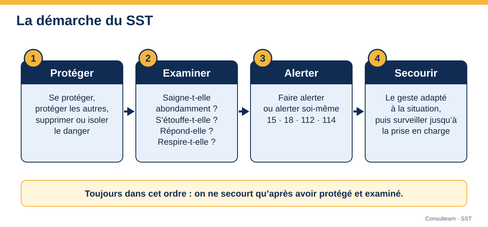
La démarche du SST
💡Comment lire : Lecture de gauche à droite : on ne passe à l’étape suivante qu’une fois la précédente traitée. Protéger vient toujours en premier.
Les quatre familles de dangers persistants
💡Comment lire : Quatre familles de dangers persistants à reconnaître avant de s’approcher de la victime.
S’approcher de la victime avant d’avoir repéré le danger.
Déplacer la victime sans nécessité : le dégagement d’urgence est exceptionnel.
Oublier les personnes qui pourraient s’exposer à leur tour.
🎬 En situation : Un salarié est au sol dans un atelier, à côté d’une machine encore en marche. Que faites-vous avant même de vous approcher ?
🧠
Question flashQuelles sont les quatre familles de dangers persistants ?
Mécanique, électrique, thermique (incendie, explosion), atmosphère toxique ou irrespirable.
🧑🏫 Note formateur
Activité : Mises en situation d’accident à partir de situations de travail des apprenants : repérer le danger persistant, les personnes exposées, choisir l’action.
Évaluation formative : Observation du geste : l’apprenant repère le danger et les personnes exposées, puis supprime, isole ou soustrait sans s’exposer.
3.1 Rechercher dans l'ordre les signes de menace vitale
3.2 Reconnaître les autres signes
3.3 Prioriser les actions
⚡
Le réflexeJe cherche d’abord ce qui menace la vie, dans l’ordre : saignement, obstruction, réponse, respiration.
📌 À retenir
Rechercher dans l’ordre les signes qui menacent immédiatement la vie : saignement abondant, obstruction complète des voies aériennes, absence de réponse, absence de respiration.
Puis reconnaître les autres signes (malaise, brûlure, douleur empêchant des mouvements, plaie).
Prioriser les actions selon les signes décelés et le résultat à atteindre : examen, résultat à atteindre, action de secours.
👀 Schémas à projeter
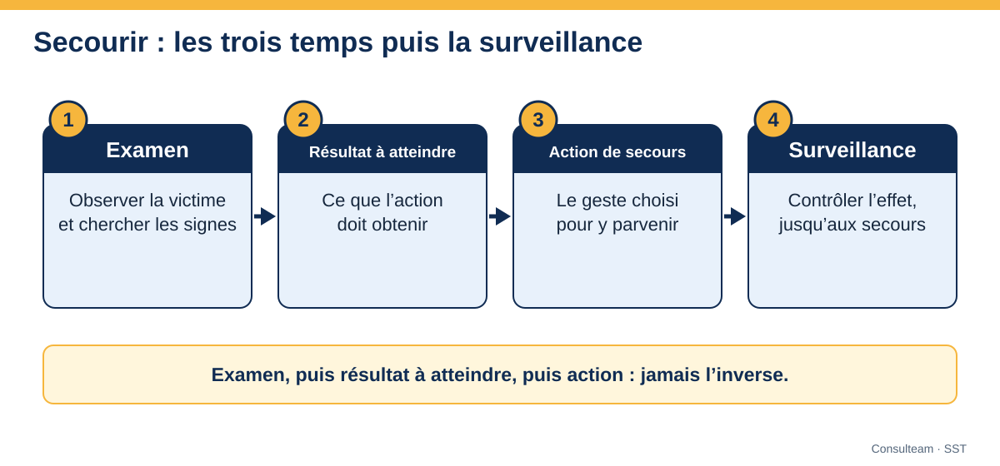
Secourir : les trois temps puis la surveillance
💡Comment lire : Examen, résultat à atteindre, action : on ne secourt jamais avant d’avoir examiné.
⚠️
Pièges fréquents
Se laisser distraire par une plaie spectaculaire mais non vitale.
Inverser l’ordre de l’examen.
Examiner sans parler à la victime.
🎬 En situation : Une victime saigne de la main et se plaint aussi d’une douleur au dos. Quels signes cherchez-vous, dans quel ordre ?
🧠
Question flashQuel est le premier signe recherché ?
Un saignement abondant.
🧑🏫 Note formateur
Activité : Ateliers d’examen en binômes sur victimes simulées, avec cartes de signes ; l’observateur note l’ordre suivi.
Évaluation formative : Le formateur vérifie l’ordre de recherche et la capacité à décider de l’action à partir des signes, sans corriger pendant l’action sauf si la victime est mise en danger.
4.2 Identifier qui alerter selon l'organisation des secours
4.3 Faire alerter par la personne la plus apte ou alerter soi-même
⚡
Le réflexeJe choisis qui alerte, je dicte le message, et je ne raccroche jamais le premier.
📌 À retenir
Le message d’alerte comporte : identité et numéro de l’appelant, lieu précis, nature de l’événement, nombre de victimes, état des victimes, actions déjà engagées.
En entreprise, alerter les secours internes prévus ; hors entreprise : 15 (SAMU), 18 (pompiers), 112 (urgences européen), 114 (par SMS, visio, tchat, pour les personnes sourdes ou malentendantes, et pour ne pas parler à voix haute en cas de violences).
Choisir la personne la plus apte à alerter, lui demander de revenir rendre compte, envoyer quelqu’un accueillir les secours, ne jamais raccrocher le premier.
👀 Schémas à projeter
Le message d’alerte
💡Comment lire : Le message suit un ordre fixe pour que les secours aient l’essentiel dès les premières phrases.
⚠️
Pièges fréquents
Alerter sans lieu précis.
Raccrocher avant que les secours ne le décident.
Ne prévoir personne pour accueillir les secours.
🎬 En situation : Vous êtes seul avec la victime. Un témoin est présent. Qui alerte, avec quel message, et qui raccroche en dernier ?
🧠
Question flashQuels numéros pour alerter hors entreprise ?
5.1 Choisir l'action de secours à l'issue de l'examen
5.2 Réaliser l'action selon la conduite à tenir du guide
5.3 Surveiller jusqu'à la prise en charge par les secours
⚡
Le réflexeExamen, résultat à atteindre, action de secours, puis surveillance jusqu’à l’arrivée des secours.
📌 À retenir
Les trois temps : examen, résultat à atteindre, action de secours ; puis surveillance jusqu’à la prise en charge par les secours.
Saignement abondant : compression directe immédiate de l’endroit qui saigne ; garrot seulement si la compression est inefficace ou impossible.
Étouffement : de 1 à 5 claques dans le dos, puis de 1 à 5 compressions abdominales (thoraciques pour le nourrisson, la femme enceinte, la personne obèse).
🩹 Les fiches secourir suivent, dans l’ordre du déroulé : 1, 2.
👀 Schémas à projeter
Les huit situations à secourir
💡Comment lire : Chaque situation renvoie à une fiche secourir : repérez le signe, puis ouvrez la fiche correspondante.
Secourir : les trois temps puis la surveillance
💡Comment lire : Examen, résultat à atteindre, action : on ne secourt jamais avant d’avoir examiné.
Saignement qui imbibe un mouchoir en quelques secondes et ne s’arrête pas seul.
Repérer l’origine du saignement.
Faire comprimer immédiatement l’endroit qui saigne par la victime, sinon le faire soi-même.
Maintenir la compression et allonger la victime.
Faire alerter, ou alerter en haut-parleur sans lâcher la compression.
Si la compression d’un membre est inefficace ou impossible (nombreuses victimes, plaie inaccessible, corps étranger…) : garrot quelques centimètres au-dessus de la plaie, entre le cœur et la plaie. Garrot industriel de préférence.
Si la compression est efficace, un pansement compressif peut la remplacer. S’il saigne à nouveau : compression par-dessus, puis garrot.
Surveiller, parler, protéger du froid et de la chaleur ; si aggravation (sueurs, pâleur, absence de réponse), agir et rappeler les secours.
À noter : Pas de garrot au cou, au thorax ni à l’abdomen. Se protéger du sang : gants ou sac plastique, lavage des mains, retrait rapide des vêtements souillés ; en cas de contact, protocole du médecin du travail.
Saignement : compression directe — Comprimer immédiatement l’endroit qui saigne et allonger la victime. Illustration générée par IA, conçue pour ConsulteamSaignement : pansement compressif — Sur un membre, le pansement compressif peut prendre le relais lorsque la compression manuelle a arrêté le saignement. Le bras est représenté au repos. Illustration générée par IA, conçue pour Consulteam
Obstruction complète des voies aériennes : elle ne peut plus parler, tousser ni respirer.
De 1 à 5 claques vigoureuses dans le dos, victime penchée en avant.
Sans effet : de 1 à 5 compressions abdominales (Heimlich) chez l’adulte, le grand enfant et l’enfant qui tient sur la cuisse.
Nourrisson sur l’avant-bras, femme enceinte ou personne obèse (abdomen impossible à encercler) : de 1 à 5 compressions thoraciques.
Recommencer claques puis compressions tant que l’obstruction persiste.
Dès les signes de désobstruction (rejet, toux, cris, respiration) : arrêter, installer confortablement, faire alerter, surveiller.
Si elle perd connaissance : l’accompagner au sol, faire alerter, RCP, et vérifier la bouche après chaque cycle de compressions.
À noter : Cas particulier : victime consciente, alitée et difficilement mobilisable, compressions thoraciques comme pour le massage cardiaque. Les gestes diffèrent selon le gabarit : voir tableaux 8 à 12 du Guide.
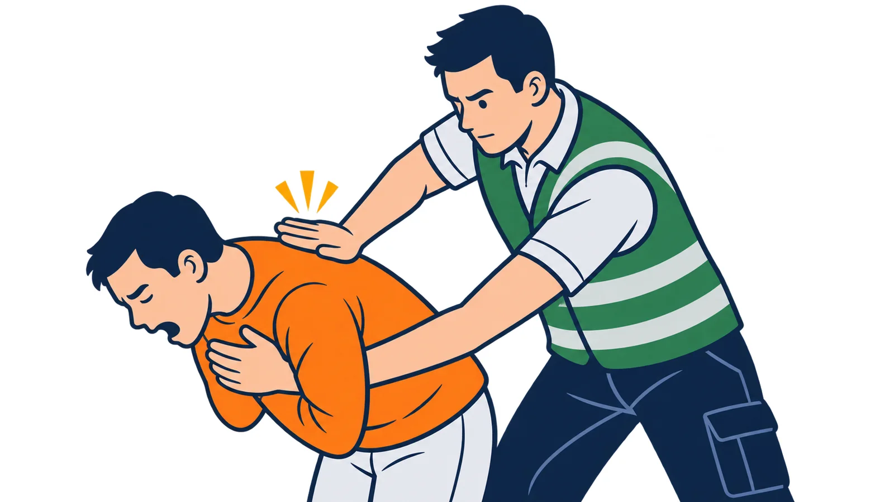
Étouffement : claques dans le dos — En cas d’obstruction complète, donner de une à cinq claques dans le dos et s’arrêter dès que la désobstruction est obtenue. Illustration générée par IA, conçue pour Consulteam
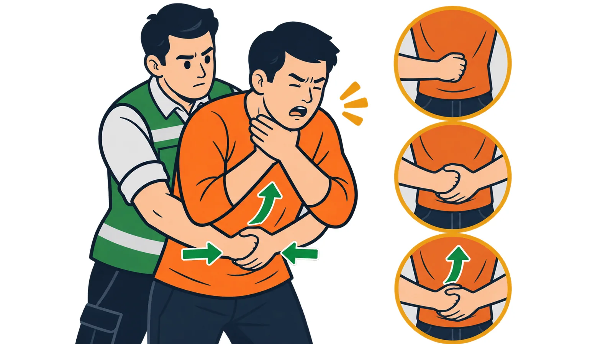
Étouffement : compressions abdominales — Après des claques inefficaces, réaliser de une à cinq compressions abdominales chez l’adulte lorsque le geste est possible. Valider le point d’appui sur l’image. Illustration générée par IA, conçue pour Consulteam
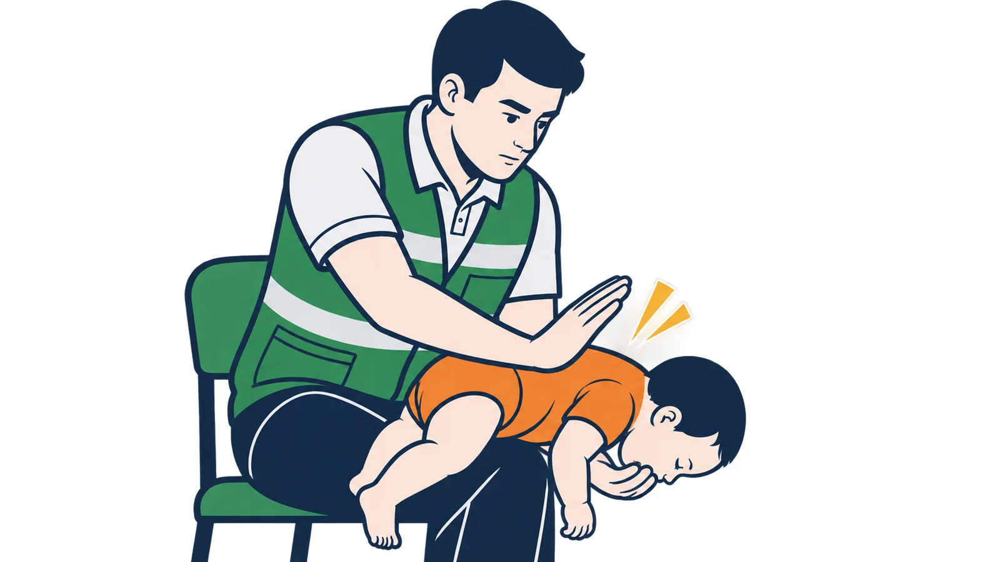
Étouffement : nourrisson — Soutenir la tête en prenant appui sur la mâchoire et donner jusqu’à cinq claques entre les omoplates. Faire valider le maintien et l’orientation. Illustration générée par IA, conçue pour Consulteam
Poser un garrot d’emblée : d’abord la compression directe.
Arrêter de surveiller après le premier geste.
🎬 En situation : Un adulte porte la main à la gorge et ne peut plus parler. Vous avez protégé, examiné, fait alerter. Quel geste, puis quelle surveillance ?
🧠
Question flashQuand poser un garrot ?
Seulement si la compression directe est inefficace ou impossible ; garrot industriel de préférence, improvisé possible.
Respiration normale : liberté des voies aériennes.
Événement non traumatique : mettre en position latérale de sécurité (PLS), faire alerter, surveiller la respiration.
PLS de préférence sur le côté gauche pour une femme enceinte ou une personne obèse ; à défaut sur le côté droit.
Événement traumatique ou origine inconnue : la laisser sur le dos en maintenant la bascule de la tête (adulte, enfant) ou la tête en position neutre (nourrisson).
Nourrisson : le placer sur le côté dans les bras du SST. Enfant : même conduite que l’adulte.
Convulsions : ne pas toucher, écarter les objets dangereux, examiner à la fin, PLS si besoin.
À noter : En période épidémique, apprécier la respiration sans se pencher au-dessus du visage ni basculer la tête.
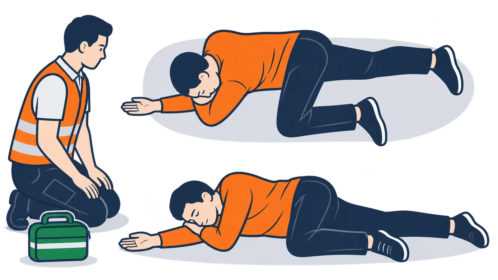
Position latérale de sécurité — Pour la conduite SST, distinguer une perte de connaissance d’origine non traumatique d’un traumatisme ou d’une origine inconnue. Faire valider l’indication et la géométrie de la position avant diffusion. Illustration générée par IA, conçue pour Consulteam
Observer les signes d’apparition soudaine, même brefs : AVC (faiblesse ou paralysie d’un bras, déformation du visage, trouble de la vision, difficulté de langage, mal de tête sévère inhabituel, perte d’équilibre), accident cardiaque (douleur dans la poitrine), maladie infectieuse (fièvre, frissons, sueurs, courbatures), autres signes (douleur abdominale intense, difficulté à respirer ou parler, sueurs sans effort, pâleur intense).
AVC ou douleur thoracique : prise en charge urgente, faire alerter sans attendre.
Mettre au repos : allongée confortablement ou dans la position où elle se sent le mieux ; assise en cas de gêne respiratoire ; desserrer les vêtements, rassurer.
Si infection possible : gestes barrières, masque pour la victime, consignes de l’entreprise ou des autorités.
À noter : Chez une peau foncée, la pâleur se juge à la face interne des lèvres. Suivre les consignes du service de secours.
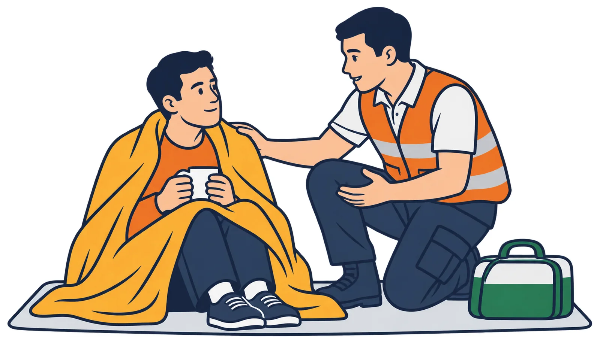
Malaise : mise au repos — Mettre la victime au repos dans une position adaptée, l’interroger et demander un avis médical. Illustration générée par IA, conçue pour Consulteam
Brûlure simple ou grave ? Le danger est aussi pour le sauveteur.
Vêtements enflammés : empêcher de courir, étouffer les flammes avec un vêtement ou une couverture, rouler au sol.
Refroidir tout de suite par de l’eau courante tempérée, au moins 10 minutes, idéalement 20.
Retirer vêtements et bijoux sur ou près de la brûlure, sauf ce qui adhère.
Évaluer la gravité : brûlure grave si cloques de surface supérieure à la moitié de la paume de la victime, destruction profonde, visage, cou, mains, articulations, orifices, rougeur étendue chez l’enfant, origine chimique, électrique ou radiologique.
Brûlure grave : faire alerter dès le début de l’arrosage, poursuivre le refroidissement, mettre au repos, surveiller.
À noter : Brûlure chimique : arroser pour rincer (tableau 14). Dans tous les cas, suivre le protocole du médecin du travail s’il existe.
Brûlure : refroidir à l’eau courante — Pour une brûlure thermique, refroidir immédiatement à l’eau courante tempérée au moins 10 minutes, idéalement 20 selon le V5.01. Suivre les consignes des secours. Illustration générée par IA, conçue pour ConsulteamVêtements enflammés : étouffer les flammes
La gravité dépend du mécanisme (projectile, liquide sous pression, piqûre de matériel de soin, outil, morsure, objet tranchant), de l’aspect (corps étranger, chairs écrasées, membre sectionné), de la localisation (cou, œil, face, orifice naturel, thorax, abdomen), des conséquences (extrémité qui ne bouge plus, fourmillements, froid) et des antécédents médicaux.
Plaie simple : la nettoyer et la protéger (tableau 18).
Plaie grave : position d’attente (thorax : assis, plaie à l’air libre ; abdomen : allongé jambes fléchies ; œil : allongé, yeux fermés), faire alerter, surveiller.
Membre sectionné : récupérer le segment et les fragments et les conditionner (tableau 17).
À noter : Voir le Guide pour les positions d’attente et les consignes de nettoyage.
Plaie simple : nettoyer et protéger — Pour une plaie simple, nettoyer puis protéger avec un pansement. Vérifier les consignes liées au risque infectieux et à la vaccination antitétanique. Illustration générée par IA, conçue pour Consulteam
Cou, tête, membre : ne pas aggraver, faire alerter.
Cou après traumatisme : demander de ne pas bouger la tête, faire alerter, stabiliser si possible le rachis cervical dans la position trouvée, surveiller.
Coup sur la tête avec agitation, vomissements, trou de mémoire, maux de tête persistants ou engourdissement : allonger, faire alerter, surveiller.
Membre : demander de ne pas mobiliser, faire alerter, suivre les consignes des secours, surveiller.
À noter : Ne pas tenter de réaligner une fracture déplacée.
Douleur : ne pas aggraver — En cas de douleur empêchant certains mouvements, demander de ne pas bouger. Faire alerter et suivre les consignes. Illustration générée par IA, conçue pour Consulteam
Arrêt cardiaque : alerte, RCP, DAE, le plus tôt possible.
Témoin présent : le faire alerter et apporter un DAE ; commencer la RCP tout de suite ; mettre en œuvre le DAE dès son arrivée en suivant l’appareil ; continuer jusqu’aux secours.
Sans témoin : alerter en haut-parleur, débuter la RCP ; aller chercher le DAE seulement s’il est proche et accessible sans quitter la victime plus de 10 secondes.
Adulte : cycles de 30 compressions et 2 insufflations, 100 à 120 compressions par minute, enfoncement d’environ 5 cm sans dépasser 6 cm.
Enfant et nourrisson : commencer par 5 insufflations, puis cycles de 15 compressions et 2 insufflations.
Insufflations impossibles ou SST qui ne s’en sent pas capable : compressions continues.
Ne jamais retirer les électrodes ni éteindre le DAE avant les secours. À deux SST : l’un comprime, l’autre insuffle, relais toutes les 2 minutes pendant l’analyse du DAE.
À noter : Enfant et nourrisson : électrodes pédiatriques si disponibles, sinon électrodes adulte au milieu du thorax et au milieu du dos.
🎞️ Scène animée : Alerter, masser, défibriller
RCP : compressions thoraciques — Comprimer au centre de la poitrine, sur la moitié inférieure du sternum, à 100–120 compressions par minute. Faire valider l’appui, l’alignement et l’axe des bras. Illustration générée par IA, conçue pour ConsulteamDAE : trois étapes — Allumer le DAE, suivre ses instructions et le schéma de pose des électrodes. Personne ne touche la victime pendant l’analyse ni le choc. Illustration générée par IA, conçue pour Consulteam
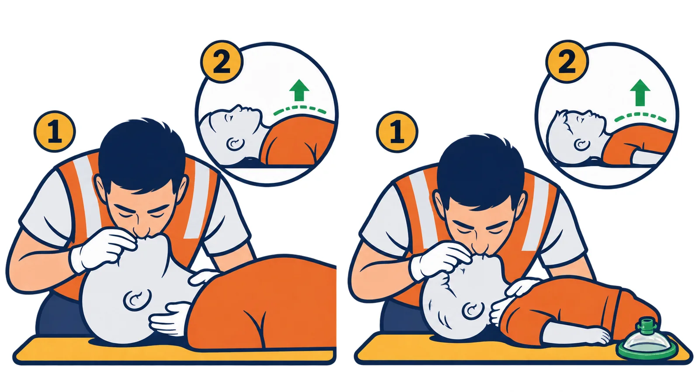
RCP : insufflations — Faire vérifier la libération des voies aériennes et l’étanchéité. Le V5.01 prévoit cinq insufflations initiales chez l’enfant et le nourrisson. Illustration générée par IA, conçue pour Consulteam
Schémas simplifiés. Valeurs de référence : Guide des données techniques V5.01 (2024) ; Document de référence SST V8 ; Manuel du formateur 2024. Animation conçue pour Consulteam.